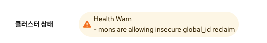

문제유형¶
2차스토리지 연결이 안되는 현상¶
[문제유형]
초기 구성 혹은 운영 중 Secondary Storage VM Agent 상태가 "disconnect" 혹은 "Alert" 상태가 되어 2차 스토리지와 관련된 작업에 에러가 있거나 2차 스토리지 용량 표기가 안되는 현상
ssvm에 접속해서
(접속하는 방법은 웹에서 웹콘솔로 접속하거나 ssvm 이 있는 호스트에 접속해서 virsh console s-oo-oo 로 접속)
tail -f /var/log/cloud.log 를 확인하여 다음과 같은 에러메시지가 나온다면
에러메시지
Error
Unable to start agent: Resource class not found: com.cloud.storage.resource.PremiumSecondaryStorageResource due to: java.lang.ClassNotFoundException: com.cloud.storage.resource.PremiumSecondaryStorageResource
[조치방법]
/var/cache/cloud/cmdline 파일을 vi 편집기로 연 후에
원본 cmdline 파일 내용
template=domP type=secstorage host=10.10.1.10 port=8250 name=s-4-VM zone=1 pod=11 guid=s-4-VM workers=5 resource=com.cloud.storage.resource.PremiumSecondaryStoraa geResource instance=SecStorage sslcopy=false role=templateProcessor mtu=1500 ethh 2ip=10.10.1.22 eth2mask=255.255.0.0 gateway=10.10.0.1 public.network.device=eth22 eth0ip=169.254.154.163 eth0mask=255.255.0.0 eth1ip=10.10.1.14 eth1mask=255.255.. 0.0 mgmtcidr=10.10.0.0/16 localgw=10.10.0.1 private.network.device=eth1 internall dns1=10.10.0.1 dns1=8.8.8.8 nfsVersion=nulll
resource 태그값을 수정 resource=com.cloud.storage.resource.PremiumSecondaryStorageResource
-> resource=org.apache.cloudstack.storage.resource.NfsSecondaryStorageResource
수정된 cmdline 파일 내용
template=domP type=secstorage host=10.10.1.10 port=8250 name=s-4-VM zone=1 pod=11 guid=s-4-VM workers=5 resource=org.apache.cloudstack.storage.resource.NfsSecondaryStorageResource instance=SecStorage sslcopy=false role=templateProcessor mtu=1500 ethh 2ip=10.10.1.22 eth2mask=255.255.0.0 gateway=10.10.0.1 public.network.device=eth22 eth0ip=169.254.154.163 eth0mask=255.255.0.0 eth1ip=10.10.1.14 eth1mask=255.255.. 0.0 mgmtcidr=10.10.0.0/16 localgw=10.10.0.1 private.network.device=eth1 internall dns1=10.10.0.1 dns1=8.8.8.8 nfsVersion=nulll
혹은 다음의 스크립트 실행 - 해당부분을 바꿔주는 스크립트
sed -i 's$resource=com.cloud.storage.resource.PremiumSecondaryStorageResource$resource=org.apache.cloudstack.storage.resource.NfsSecondaryStorageResource$' /var/cache/cloud/cmdline
수정한 후에 에이전트 재실행
systemctl restart cloud
디스크 장애(불량)으로 교체하는 방법¶
[문제유형]
디스크의 하드웨어 장애 혹은 논리적인 장애로 인하여 OSD가 정상적이지 않아 해당 OSD가 down 혹은 out 되고, 재시작이 안되는 현상
[조치방법]
SCVM에 접속하여 다음의 절차를 진행하여 교체
- 장애가 발생한 OSD out
cehp osd out osd.{osd_id} - 해당 OSD 서비스를 정지
systemctl stop ceph-osd@{osd_id} -
해당 OSD를 포멧
ceph-volume lvm zap /dev/{device_id} --destroyInfo
해당 OSD가 어떤 디바이스인지 알기 위해서는 "ceph-volume lvm list"를 통하여 osd.id의 devices 정보를 확인
(osd 정보가 남아있을 경우 다음 4,5 절차 진행)
-
장애가 발생한 OSD를 제거
ceph osd rm osd.{osd_id} - 제거한 OSD를 Crushmap에서 제거
ceph osd crush rm osd.{osd_id} -
제거한 OSD를 Auth에서 제거
ceph auth rm osd.{osd_id}Note
디스크를 추가 시에는 해당 초기 구성방법에 따라 Raid에 인식이 되어야 하며 OS 상에서도 인식이 되어야 합니다 경우에 따라서는 호스트 혹은 scvm의 재기동이 필요합니다.
-
추가된 디스크를 OSD로 배포
Info
7번의 절차는 ceph 계정으로 실행하여야 합니다. "su - ceph "
해당 작업 중에 다음과 같은 에러가 발생하는 경우에는ceph-deploy osd create –-data /dev/{device_id} --bluestore {scvm이름}Error
[ceph_deploy.osd][DEBUG ] Deploying osd to scvm3 [ceph_deploy.osd][ERROR ] RuntimeError: config file /etc/ceph/ceph.conf exists with different content; use --overwrite-conf to overwrite [ceph_deploy][ERROR ] GenericError: Failed to create 1 OSDs
"/etc/ceph/ceph.conf" 파일을 ceph 계정 홈 디렉토리(현재작업중인 디렉토리)로 복사(이미 있는경우 덮어쓰기)한 후에 다시 실행 합니다.
-
배포된 OSD를 풀에 추가
ceph osd crush move osd.{osd_id} host={host명}Info
host명은 "ceph osd tree" 의 결과에서 host 항목의 이름입니다
-
OSD에 가중치 할당(구 버전에서만 적용)
ceph osd crush reweight-subtree {pool-name} 1 - 자동으로 밸런싱이 실행되며 완료 됩니다
기본스토리지 추가 시 RBD RADOS 시크릿 키 에러 발생 시¶
[문제유형]
기본스토리지 RBD 프로토콜 형태로 추가 시 RADOS 시크릿 오류로 추가가 되지 않는 현상
[조치방법]
RADOS 시크릿 키에 특수기호(/)가 포함될 경우 오류가 발생하며 이와 같은 경우에는 RADOS 시크릿 키를 새로 생성하여 입력하여야 합니다.
정상적인 시크릿 키 형식(예) : AQAi2gBhhph/HBAAf5MgATyuQPI6KaiBooyXzw== 오류가 발생하는 시크릿 키 형식(예) : AQAY2gBhk7i/OhAAoEUC5/A9It2P2jQsJcJbMg==
시크릿 키를 새로 생성하는 방법은 다음과 같습니다.
Note
기존에 생성되어 있는 admin 사용자는 수정 및 삭제가 불가능합니다. 새로운 사용자명으로 시크릿 키를 생성하고 만약 새로 생성된 시크릿 키에서도 특수기호(/)가 포함되어 있다면 해당 사용자명을 삭제 후 다시 생성하시면 됩니다
- glue 관리 콘솔(scvm에 ssh로) 접속 합니다
- 다음의 명령어롤 통하여 시크릿키 생성합니다.
ceph auth get-or-create client.사용자명 mon 'allow *' osd 'allow *' mds 'allow *' mgr 'allow *' - 생성된 키를 확인 합니다.
[client.ablecube] key = AQDkcBNhsEsFKBAAyuchQ6S+wfXaYk0S1M98vw== - 만일 생성된 키에 특수 문자(/)가 포함이 되어 있으면 다음의 명령어를 통하여 사용자를 삭제한 후 다시 생성합니다.
ceph auth del client.사용자명 - 생성된 시크릿 키를 복사하여 기본 스토리지 추가 시 사용합니다.
- 기본 스토리지 추가 시 RADOS 사용자 항목에는 새로 생성한 사용자를 입력합니다.
OSD META 용량이 (near)Full이 발생하는 경우¶
[문제유형]
실제 데이터 사용은 미비하나 META가 비정상적으로 많이 사용되어 OSD의 (near)Full 이 발생하는 현상

[조치방법]
다음의 명령어를 통하여 OSD의 META Data를 정리합니다
ceph tell osd.{osd.id} compact
만일 모든 OSD를 전체 정리가 필요하다면 다음의 명령어를 통하여 한번에 적용합니다.
ceph tell osd.\* compact
스토리지 클러스터 상태가 reclaim 관련 Warn 인 경우¶
[문제유형]
스토리지 클러스터의 상태가 Warn 이고, 메시지가 "mons are allowing insecure global_id reclaim"로 나오는 경우

Ceph 14.2.20 릴리스와 함께 Ceph 인증 프레임워크에서 보안 취약점이 해결되어 클러스터가 패치되면서 경고가 표시되는 현상
[조치방법]
다음의 명령어를 통하여 경고메시지를 예외처리 합니다.
ceph config set mon mon_warn_on_insecure_global_id_reclaim false
ceph config set mon mon_warn_on_insecure_global_id_reclaim_allowed false
ceph config set mon mon_warn_on_insecure_global_id_reclaim true
ceph config set mon mon_warn_on_insecure_global_id_reclaim_allowed true
ceph config set mon auth_allow_insecure_global_id_reclaim false